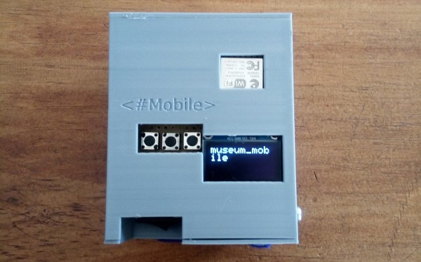

Hasta que Todo Falle

Sistema circulatorio cyborg, que funciona en un sistema cerrado leyendo en loop los valores de un electrocardiograma que me realicé en 2020. Un sistema electrónico traduce los movimientos de sistole y diastole de mi corazón y desplaza el liquido hacia el centro y de nuevo hacia abajo. Como centro de la obra, se encuentra un filtro de combustible, que perteneció al generador eléctrico que muchos años atrás funcionó en la casa de mis abuelos maternos, durante la cual viví parte de mi infancia.